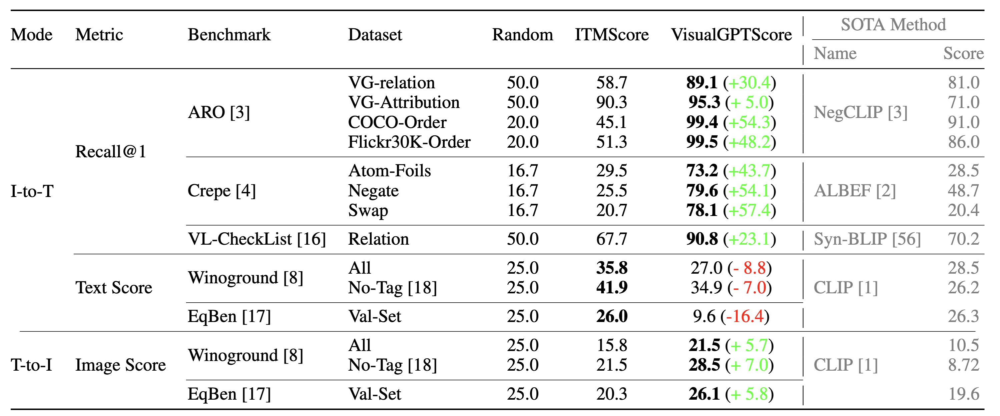
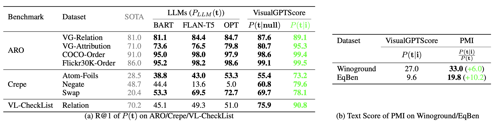
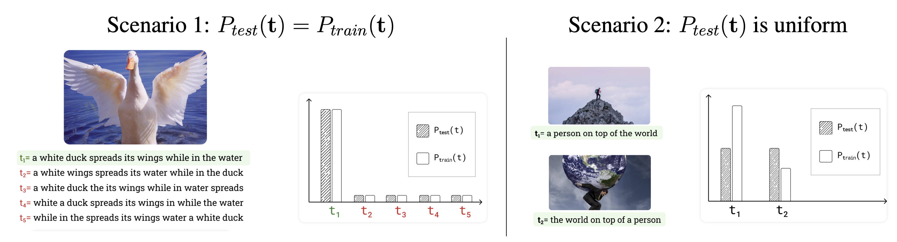
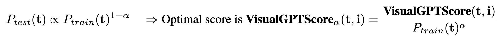
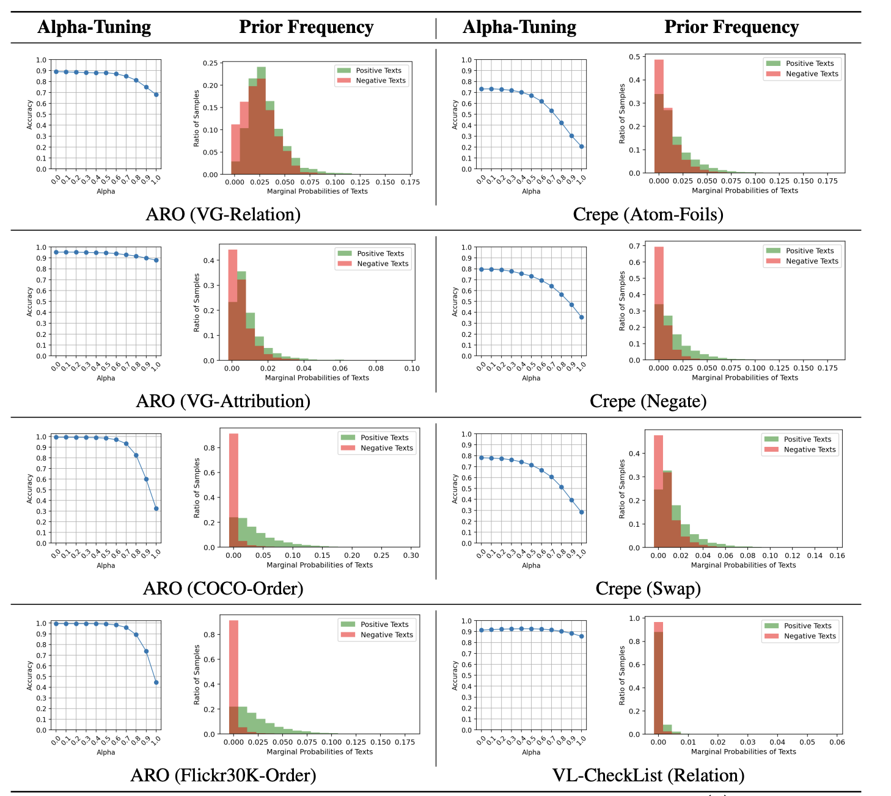
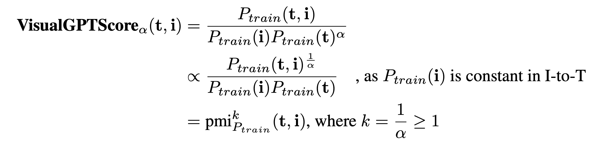
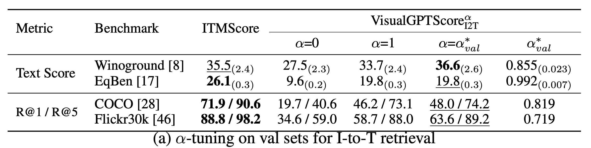

Visio-Linguistic Reasoning with Multimodal Generative Pre-Training Scores
|
Carnegie Mellon University1
|
Meta2
|
Vision-language models (VLMs) discriminatively pre-trained with contrastive image-text matching losses such as P(match|text, image) have been criticized for lacking compositional understanding.
This means they might output similar scores even if the original caption is rearranged into a different semantic statement.
To address this, we propose to use the Visual Generative Pre-Training Score (VisualGPTScore) of $P(text|image),
a multimodal generative score that captures the likelihood of a text caption conditioned on an image using an image-conditioned language model.
Contrary to the belief that VLMs are mere bag-of-words models, our off-the-shelf VisualGPTScore demonstrates top-tier performance on recently proposed
image-text retrieval benchmarks like ARO and Crepe that assess compositional reasoning. Furthermore, we factorize VisualGPTScore into a product of
the marginal P(text) and the Pointwise Mutual Information (PMI). This helps to (a) diagnose datasets with strong language bias,
and (b) debias results on other benchmarks like Winoground using an information-theoretic framework.
VisualGPTScore provides valuable insights and serves as a strong baseline for future evaluation of visio-linguistic compositionality.
Generative Score for Visio-Linguistic Compositionality
Mainstream VLMs evaluated with discriminative scores that model
P(match|text, image) like the ITMScore fail to generalize to compositional reasoning benchmarks.
We show that our off-the-shelf VisualGPTScore trained with generative language modelling loss achieves top-tier performance on these benchmarks without additional fine-tuning.

Information-Theoretic Factorization of VisualGPTScore
To have a better understanding of the performance discrepancy across benchmarks, we factorize VisualGPTScore as a product of marginal P(text) and Pointwise Mutual Information (PMI).
By approximating P(text) with Monte Carlo sampling, we show that some benchmarks such as ARO and Crepe can be partially addressed via P(text). Importantly, solutions that ignore images can still outperform SOTA algorithms trained on carefully-tuned negative samples such as NegCLIP. This makes it hard to interpret the progress these methods have made in bridging the visio-linguistic compositionality gap.

Meanwhile, PMI, the "debiased" version of VisualGPTScore can significantly boost its performance on balanced benchmarks such as Winoground and EqBen. Intuitively, this debiasing procedure mitigates the tendency of VisualGPTScore to always assign
higher scores (regardless of the image) to more "common" texts (like "the person on top of the world")
compared to less "common" texts (like "the world on top of the person"), since both texts have the
same chance of being positive in Winoground testset.
VisualGPTScore as a Diagnostic Tool of Language Bias
We attempt to systematically analyze the language bias of recent visio-linguistic benchmarks. Specifically, we make reasonable assumptions in our paper and examine two hypothetical scenarios of the train-test shift of P(text).

Theoretically, scenario (1) implies the optimal score is VisualGPTScore, and scenario 2 implies that the optimal score is PMI. Based on this, we repurpose VisualGPTScore as a diagnostic tool by introducing a tunable alpha in [0,1] that weighs the contribution of each component.

When increasing alpha from 0 to 1, we observe that performance decreases the most for datasets like COCO-Order and
Flickr-Order, which are constructed with adversarial negative captions whose Ptrain(text) are close to 0 and
can satisfy the first scenario in a trivial fashion.

Training-Free Debiasing on Image-to-Text Retrieval Benchmarks
Interestingly, the above alpha-tuning equation can be rewritten using the language of PMIk, a well-known variant of PMI that controls the amount of debiasing.

By tuning alpha on held-out validation sets, we can significantly improve the image-to-text retrieval results of VisualGPTScore on both classic and compositionality benchmarks.

Limitations and Future Work
We do not explore fine-tuning techniques due to computational constraints, but it is possible to enhance I-to-T retrieval performance using hard negative samples during training, such as with controllable generation. Furthermore, our analysis is
based on simplified assumptions. For instance, the model might not accurately represent Ptrain(text|image),
a phenomenon we examine in paper. Estimating Ptrain(text) by sampling gaussian noise
images is potentially imprecise, and we encourage future VLMs to directly model Ptrain(text).
Paper
|
Zhiqiu Lin, Xinyue Chen, Deepak Pathak, Pengchuan Zhang, Deva Ramanan.
Visio-Linguistic Reasoning with Multimodal Generative Pre-Training Scores
In submission.
[Arxiv]
[Code]
|
Acknowledgements
This research was supported by CMU Argo AI Center for Autonomous Vehicle Research.
|
{kind=link}